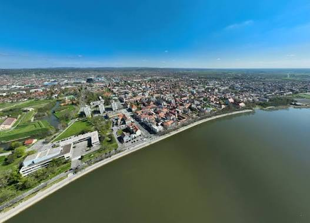

Roden 2009 godine pohadam tehnicku skolu slavonski brod
Moj hobiji je gajming,biciklizam i nogomet
elektrotehnika je smjer koji se bavi elektricitetom i elektronikom,
strojarstvo je smjer koji se bavi strojevima i mehanikom,
Racunalstvo je smjer koji se bavi računalima i programiranjem,
predmet je zanimljiv i praktičan jer
nam omogućava da stvorimo
vlastite web stranice i
aplikacijeSve to cemo korisitit u poslu
Takoder je koristan za buduće karijere u području informatike
Onda je to odličan predmet za učenje
Web programiranje je proces stvaranja i održavanja web stranica i aplikacija na internetu. Uključuje korištenje različitih tehnologija i jezika za razvoj web sadržaja.
HTML je jezik za stvaranje web stranica.
Osnovni elementi su <html>, <head>, <body>, <h1>, <p>, itd.
Tekst se koristi za prikazivanje informacija na web stranici.
Odlomci su korisni za organizaciju sadržaja na web stranici.
Prijelomi redaka se koriste za razdvajanje teksta u različite linije.
Slavonski Brod je grad u Hrvatskoj poznat po svojoj dugoj povijesti i kulturnom nasljeđu.
takoder se poznat po svojoj kulturi i tradiciji
Slavonski brod je grad s bogatom poviješću i kulturom i sportu

.jpg) index.hr
index.hr